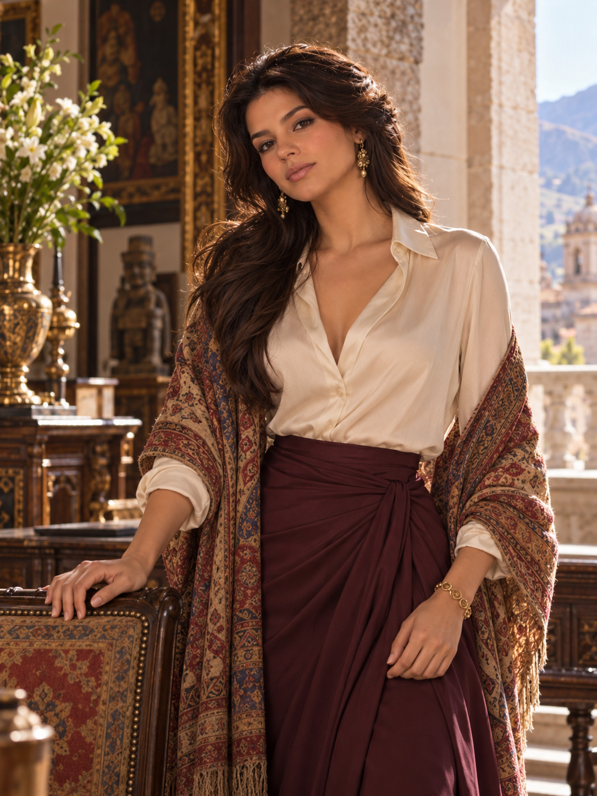
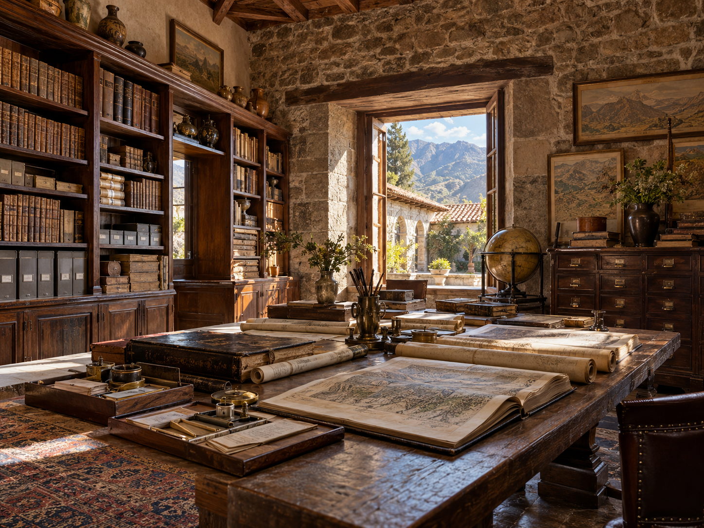
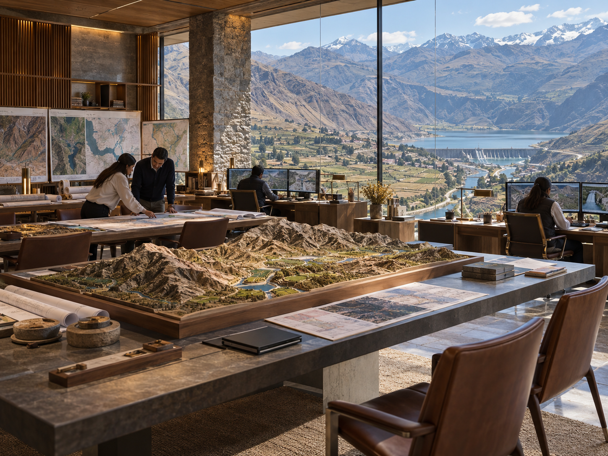

Original upload 1
Batch 2 · identity pending your confirmation
Seven original uploaded files are shown below, numbered 1–7. Compare them with your A–G identification collage. These numbers are temporary review identifiers only; the portrait and location names below have not been mapped to individual uploaded PNGs.
assets/; no pixels have been changed. The numbered order below is a stable alphabetical ordering of the original UUID filenames, not an inference about subject identity or upload chronology. No constitutional, historical, or location canon is newly established by this page.These letters refer to the separate collage and are not yet tied to the numbered files on this page. Both distinct archive illustrations are included.





Reply with which number (1–7) corresponds to each collage letter (A–G), for example in the format below. Once verified, the original PNGs can be moved into permanent named paths and integrated into the House Amaru dossier without regenerating them.
Source: seven PNG uploads in assets/ committed in two batches on 17 October 2026. Images and file sizes are retained as uploaded, pending identification.